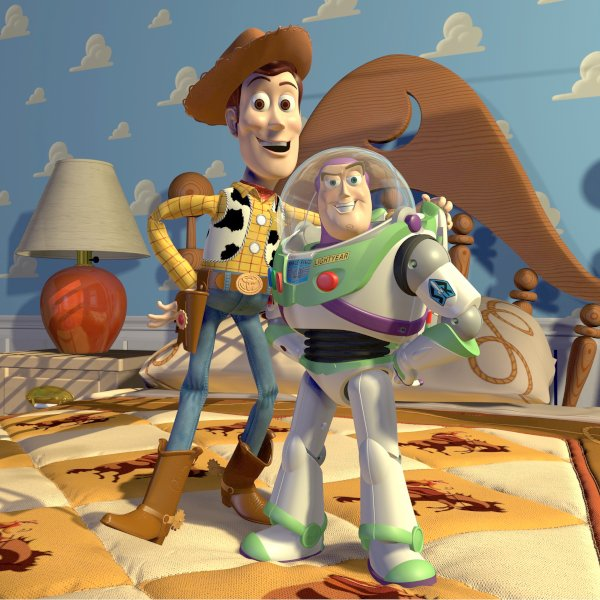

1970 :
La motion capture est une technologie qui permet d’enregistrer les mouvements d’un personnage, et de les reproduire sur un ordinateur. Dans les années 1970, l’armée et la recherche scientifique se sont intéressées au sujet et font de premiers essais sur des mouvements d’un chevaux au galop.
Depuis quelques années, la motion capture est plus souvent utilisées dans le domaine du jeu vidéo, mais aussi celui du cinéma. Cette technique a été popularisée par des films comme Le Pôle Express, sorti en 2004, qui fut le premier long métrage réalisé entièrement avec cette technologie.
Capture optique
Pour faire de la motion capture, il faut placer une plusieurs capteurs sur l’acteur à des endroits précis du corps comme les articulations par exemple. Les mouvements des capteurs vont être enregistrés pour être ensuite retranscrits sur un ordinateur. Des caméras spéciales, pour la motion capture, vont envoyer des rayons infrarouges, qui vont être réfléchies par les capteurs sur le sujet. Le problème principal de cette méthode, c’est l’environnement autour du sujet, entre les capteurs et les caméras, les rayons infrarouges ne pourront pas traverser l’obstacle et donc ne seront pas réfléchis par les capteurs.
Capture gyroscopique
C’est pour cette raison que les studios de cinémas ou autres, se tournent vers la motion capture gyroscopique. Le principe est le même que pour la méthode précédente, mais les capteurs vont être remplacés par des capteurs gyroscopique et inertiel.Un émetteur relié à l’ordinateur va retransmettre l’information. Pas de problème d’obstacle pour cette méthode, mais elle reste moins précise que la capture optique.
Exemple de Motion capture pour le film Avengers : Endgame
1996 :
L’animation par ordinateur est investie par l’industrie du dessin animé après le succès de Toy Story, réalisés au studio Pixar.
Dans le même temps, l'image de synthèse devient la norme des longs métrages d'animation aux États-Unis et les progrès techniques sont tels qu'on arrive à peine à faire la distinction entre des vues réelles et des images animées. Il s’agit de films d’animation en images de synthèse dans lequel les personnages et les objets sont en trois dimensions, par opposition au dessin traditionnel. Avec ces films, tous les éléments sont contrôlés par ordinateur, y compris les caméras. Il est donc relativement aisé et peu coûteux (par rapport à un film en prises de vues réelles.
1998 :
Le succès de Kirikou et la sorcière montre que l’animation traditionnelle a encore sa place.
Suivi par celui des Triplettes de Belleville (2003) et de Persepolis (2007), qui sont adressés à un public plus âgé, il révèle aussi la qualité de l’animation française. Si elle s’exporte moins que les films japonais ou américains, elle est reconnue à l’international grâce notamment à des écoles (Gobelins), des aides de l’État qui favorisent l’émergence de nombreux talents, en particulier dans le court métrage et les séries.
2000 :
Le développement des technologies numériques et leur démocratisation provoquent une augmentation considérable de la production d'images animées. L’animation est massivement utilisée pour l’habillage des programmes télévisuels et des sites internet. L'animation se mondialise, notamment en Corée du sud, aux Philippines et en Inde qui prennent une grande place dans les coproductions, notamment du fait du faible coût de leur main d'oeuvre. Durant cette même période, on voit surgir des longs métrages de pays inhabituels, comme l'Afrique du sud, le Zimbabwe, l’Amérique Latine (qui est en pleine émergence), le Brésil ou encore l’Argentine.
2008
À partir de 2008, des documentaires ont été réalisés en animation. Celle-ci a très tôt servi la représentation du réel. L’image par image permet de montrer ce qu’on ne pourrait pas montrer autrement : par exemple il est possible de reconstituer ce qu’une caméra n’a pas réussi à capter. Certains réalisateurs se sont même spécialisés dans ces productions.
2010 :
A partir de 2010, de nombreux films utilisent de nombreuses techniques d’animation : papier découpé, dessin, photographie, peinture… Ils illustrent une tendance récente de l’animation à associer plusieurs techniques dans une même œuvre. Par ailleurs, même dans un film apparemment “homogène” comme Ernest et Célestine, plusieurs techniques sont associées (dessin, peinture) et on associe des éléments hétérogènes (personnages / décors ; contours / couleurs) lors d’une étape devenue essentielle dans la majorité des films : le compositing.
2019 :
Le Ray Tracing est une technologie qui tient à reproduire de la manière la plus fidèle possible le trajet de la lumière dans un environnement en 3D.
Le principe d’un rendu d’une lumière est habituellement calculé comme la réflexion de la lumière, mais pas sur sa réfraction ou son ombre, nuisant donc au réalisme de la scène.
Le ray tracing inverse cette logique. Plutôt que de se baser sur une source lumineuse dans une scène, la caméra du joueur va projeter des rayons qui, au contact d’un objet, vont permettre de calculer sa réflexion, sa réfraction ainsi que son ombre.
Les rayons se baladent dans la scène d’objet en objet pour la créer devant les yeux du joueur en temps réel, permettant ainsi d’économiser des ressources et réaliser un calcul plus précis, jusqu’à arriver à la lumière source.
Le principe du ray tracing n’est en faite pas si récent. Arthur Appel, ingénieur chez IBM, travaillait déjà le premier algorithme en 1968, quand le premier jeu vidéo à utiliser le ray casting (la forme la plus simpliste de cette technologie) ne fut autre que Wolfenstein 3D en 1992.
Le Ray tracing refait parler de lui c’est dernier temps parce qu’une grande avancée est arrivée pour le ray tracing : la possibilité de le calculer en temps réel dans un environnement 3D.
Sans celle-ci, la technologie était condamnée à n’être utilisée que par des professionnels des images de synthèse, notamment Pixar, au prix de nombreuses heures de calcul réalisées par des superordinateurs.